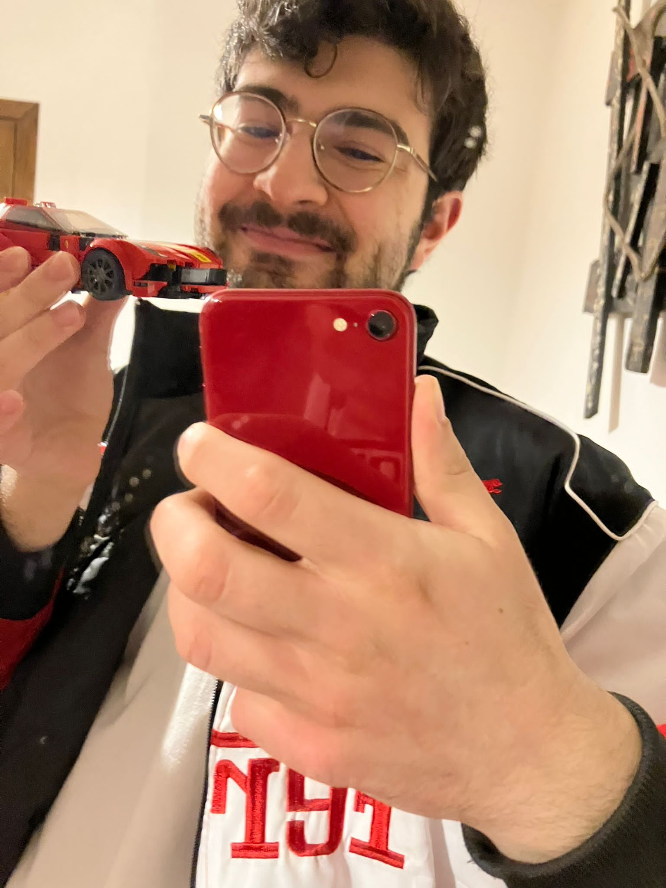

Most commonly known as Gian Maria, he was born in Southern Italy on April 12, 2002. He is currently studying at Politecnico di Milano where he will receive his doctorate title in the late Summer. Gian plans to continue his studies by pursuing a Masters in BioEngineering. He has not committed to a Masters program as of April 17,2023 but sources say that among his choices, is the same college where Albert Einstein studied. As part of his undergraduate studies, Gian particpated in an exchange program at the prestigious Ecole Polytechnique in France. There he met his pajarita whom he loves to send memes all day long.
We don't love Gian simply because he is always looking like the best served meal. We also love him because he is super talented, an aboslute academic weapon, super kind, super sweet, among many other things. He is always making everyone's day brighter, which is where one of his nicknames originates from. He is a very lovable human:))
Here is a photo of Gian proudly holding his ferrari Lego set. He dreams of owning a Ferrari in the near future.
Here is a video of Gia vibing: